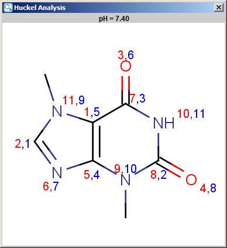
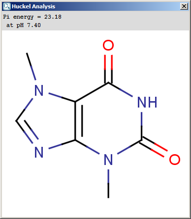
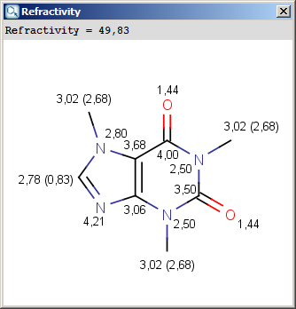

Other Plugins
Hydrogen Bond Donor-Acceptor calculates atomic hydrogen bond
donor and acceptor inclination. Atomic data and overall hydrogen bond
donor and acceptor multiplicity are displayed for the input molecule (or
its microspecies at a given pH). The
weighted average hydrogen bond donor and acceptor multiplicities taken over the microspecies and the proportions of their occurrences are computed for different pHs and displayed in a chart.
Different calculation parameters can be set in the H Bond Donor/Acceptor Options panel:
- Decimal places: setting the number of decimal places with which the result value is given.
- Type:
specifying search for donor or acceptor characteristics.
Exclude sulfur atoms from acceptors
Exclude halogens from acceptors
Show microspecies data by pH: the number of donor or acceptor sites vs. pH chart is displayed.
Microspecies:
- pH lower limit; pH upper limit; pH step size:
the pH window of the chart is set here, with data points in the step size marks.
Display major mecrospecies: the structure of the major form at the given pH is displayed.
Localization energies L(+) and L(-) for electrophilic and
nucleophilic attack at an aromatic center are calculated by the Hückel
method. The smaller L(+) or L(-) means more reactive atomic location.
Order of atoms in E(+) or in Nu(-) attack are adjusted according to
their localization energies. The total pi energy, the pi electron
density and the total electron density are also calculated by the Hückel
method. Depending on the chemical environment the following atoms have optimal Coulomb and resonance integral parameters: B, C, N, O, S, F, Cl, Br, I. All other atoms have a default, not optimized parameter.
Theoretical background is taken from Isaacs' book. Additional literature for the Hückel's parameters is Streitwieser's book.
Following calculation parameters can be set in the Huckel Analysis Options panel:
- Decimal places: setting the number of decimal places with which the result value is given.
- Type
- E(+)/Nu(-) order: numbers the aromatic atoms according to their likeliness of being attacked by electrophiles or nucleophiles.
- Localization energy L(+)/L(-): gives the localization energies of the aromatic center (dimension β).
- Pi energy: calculates the pi energy of the aromatic ring(s) (dimension β).
- Electron density: calculates the pi electron density.
- Charge density: calculates total charge density on the ring atoms.
- Subtype: E(+); Nu(-): for E(+)/Nu(-)order and Localization energy L(+)/L(-), the electrophilicity and nucleophilicity approaches can be selected (at least one fo them). Results for E(+) are coloured red, and Nu(-) blue.
- Take major microspecies at pH: calculates the values for the major microspecies at the given pH.
The results appear in a new window, indicating all values at the corresponding atoms in the aromatic ring. The picture on the left is the result of Aromatic E(+)/Nu(-) order, the picture on the right the pi energy calculation:


Refractivity Plugin
Our calculation is based on the atomic method proposed by Viswanadhan et al. Molar refractivity
is strongly related to the volume of the molecules and to London
dispersive forces that has important effect in drug-receptor interaction.
Different calculation parameters can be set in the Refractivity Options panel:
- Decimal places: setting the number of decimal places with which the result value is given.
- Type
- Increments: displays the increments given by atoms.
- Refractivity: calculates the value of the molar refractivity
- Increments of hydrogens: displays the increments given by hydrogens.
- Display in MarvinSpace: the result window opens as 3D MarvinSpace viewer. If unchecked, the results will be shown on a 2D picture.
The result appears in a new window, containing a text field with the value of refractivity (dimension: 106⋅[m3⋅mol-1] and the molecule in 2D or 3D view:
|  |
 |
The numbers in brackets refer to the refractivity sums of the implicit hydrogen atoms.
The Resonance plugin generates all resonance structures of a molecule.
The major contributors of the resonance structures can be calculated
separately. Following options can be adjusted in the Resonance Options panel:
- Max. number of structure: maximize the number of structures to display (decrease calculation time).
- Take canonical form: displays the canonical structure of the molecule.
- Take major contributors: select the most relevant structures.
- Single fragment mode : if checked (default), the results are displayed in separate windows; if unchecked, the calculation handles unlinked molecules together and results are in the same window.
For example the two structures below, on the left are the major
resonance contributors of diazomethane, while the structure on the right is the
canonical form:
The plugin calculates Bemis and Murcko frameworks and other structure based
reduced representations of the input structures.
The required calculation can be selected on the Framework type tab of
the Structural frameworks Options panel:
- Bemis-Murcko framework is calculated by removing side chains from
the input and generalizing atom/bond types. If Keep single atom for non-
empty acyclic structures selected then acyclic inputs will not be erased
completely; they will be represented by a single node.
- Maximum common substructure calculates MCS for every pairs of
input fragments. The input must contain at least two disconnected fragments.
- Largest ring returns the largest SSSR ring of the input.
- All fused ring systems returns the fused ring systems of the input
- Largest fused ring system returns the largest the fused ring systems
of the input
- Smallest set of the smallest rings (SSSR) returns the SSSR rings
of the input.
- Complete set of the smallest rings (CSSR) returns the CSSR rings
of the input.
- Only pre/post process, no framework reduction can be used to examine
the optional preprocess and postprocess functionality. Selecting this option
will skip any framework reduction/fragmentation.
The Advanced settings tab allows options to fine tune the execution:
Note that redundant or not applicable options will be dinamically disabled based
on the selected framework type or other calculations. (For example Bemis-Murcko
framework calculation will generalize the input, so prune input/output will
be disabled when it is selected.)
- Input preprocess steps are executed before the framework calculation.
- Process only the largest fragment of the input structure: if
selected then the largest fragment will be processed in the following steps
- Prune input the input structure will be generalized by
changing all atom types to carbon, all bond types to single and removing
all stereo/wedge bond flags
- Add explicit hydrogens will invoke hydrogenize on the input
- Remove explicit hydrogens will invoke dehydrogenize on the
input
- Output postprocess steps are executed after the framework calculation.
- Prune results will generalize the resulting framework after
the calculations
- Return only the largest fragment of the result will keep only
the largest resulting fragment
- Remove topologically equivalent output fragments will remove
duplicated result fragments
The result window contains the framework:
References
- Viswanadhan, V. N.; Ghose, A. K.; Revankar,
G. R.; Robins, R. K., J. Chem. Inf. Comput. Sci., 1989, 29,
163-172; doi
- Isaacs, N.S., Physical Organic
Chemistry, John Wiley & Sons, Inc., New York, 1987, ISBN 0582218632.
- Streitwieser, A., Molecular Orbital Theory for Organic Chemists, John Wiley, 1961, ISBN 0471833584.